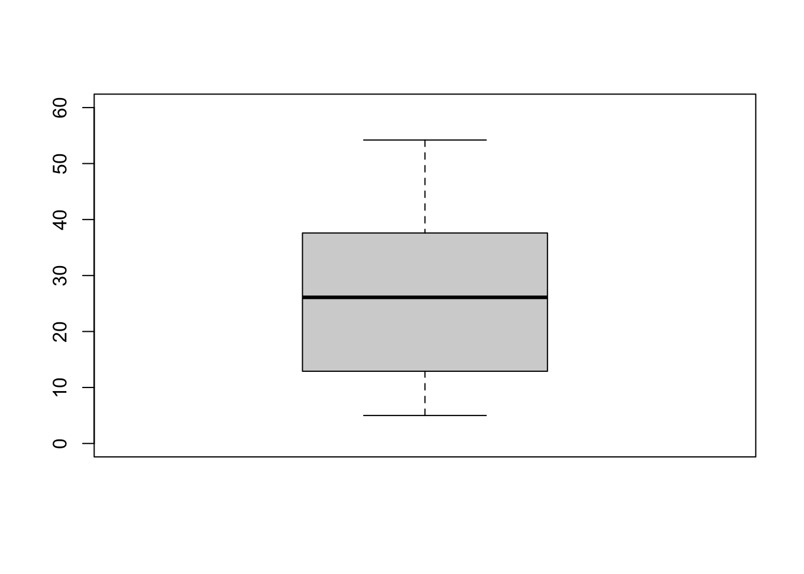
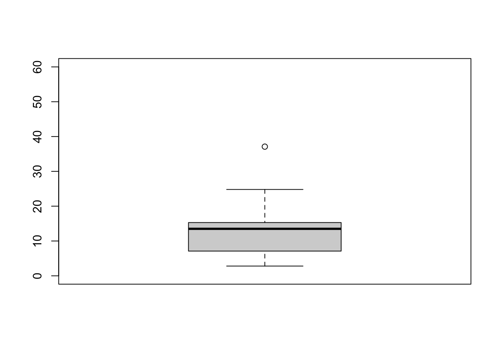
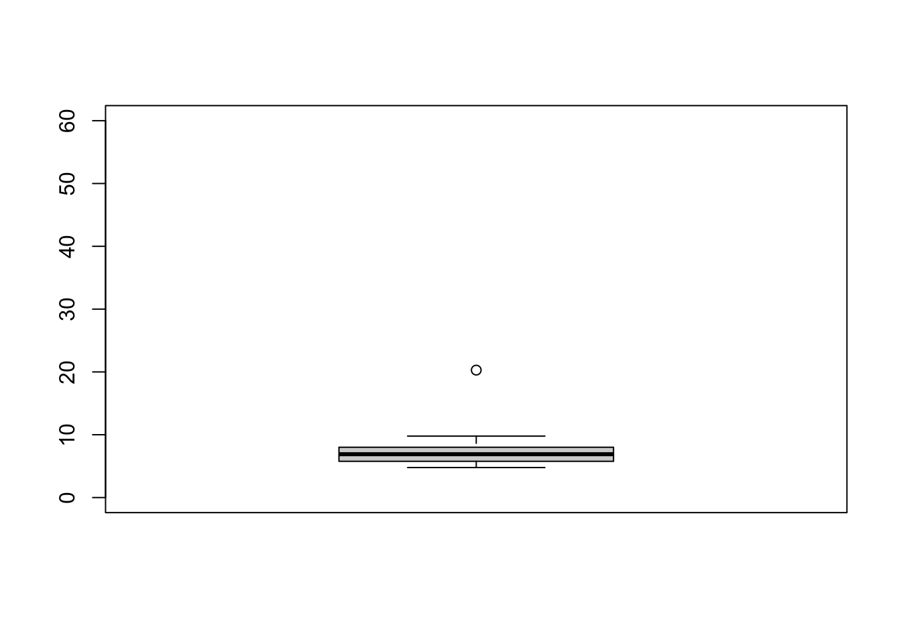
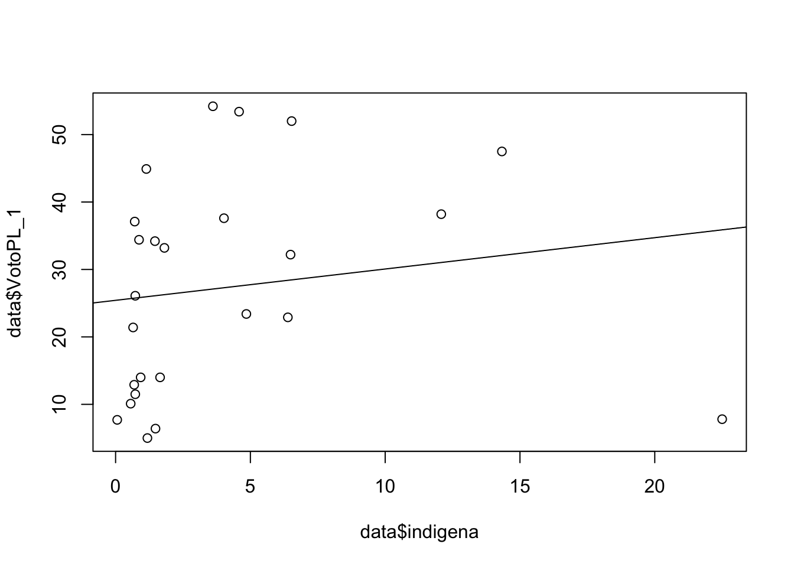

Repaso
Buscando y cargando datos
Abrir la base de datos de las elecciones 2021 a nivel departamental
en Excel.
Buscar la información acerca de autoidentificación étnica y
agregar las columnas para el porcentaje de personas que se
autoidentifica como población indígena u originaria
Agregar otra columna para el porcentaje de personas que se
autoidentifica como “afro”.
Agregar otra columna para el porcentaje de ciudadanos que votaron
por otro candidato(a) diferente a Pedro Castillo o Keiko
Fujimori.
Este nuevo archivo Excel cárguenlo en RStudio.
library(rio)
data <- import("bases/voto2021_v2.xlsx")
Manipulando datos
- Calcular el porcentaje total de personas que se autoidentifican con
algún grupo étnico (suma de % de población indígena u originaria + % de
personas afro)
Descriptivos
Comparar los descriptivos de las variables del voto a los(as) 3
candidatos(as).
summary(data$VotoPL_1)
## Min. 1st Qu. Median Mean 3rd Qu. Max.
## 5.00 12.90 26.10 27.28 37.60 54.20
summary(data$VotoFP_1)
## Min. 1st Qu. Median Mean 3rd Qu. Max.
## 2.80 7.10 13.50 13.17 15.30 37.10
summary(data$VotoVM_1)
## Min. 1st Qu. Median Mean 3rd Qu. Max.
## 4.780 5.770 6.900 7.467 8.010 20.290
sd(data$VotoPL_1)
## [1] 15.92487
sd(data$VotoFP_1)
## [1] 7.628047
sd(data$VotoVM_1)
## [1] 2.98721
Graficar descriptivamente mediante un gráfico de cajas.
boxplot(data$VotoPL_1, ylim=c(0, 60))

boxplot(data$VotoFP_1, ylim=c(0, 60))

boxplot(data$VotoVM_1, ylim=c(0, 60))

Inferencia
Comparar IC entre grupos:
- Voto a un candidato entre 2 grupos de pobreza
data$pobre = ifelse(data$Pobreza2020>34.6, 1, 0)
library(lsr)
ciMean(data$VotoPL_1[data$pobre==0])
## 2.5% 97.5%
## [1,] 15.16345 28.17339
ciMean(data$VotoPL_1[data$pobre==1])
## 2.5% 97.5%
## [1,] 36.78645 53.34688
- Graficar alguna de estas comparaciones
library(gplots)
## Registered S3 method overwritten by 'gplots':
## method from
## reorder.factor DescTools
##
## Attaching package: 'gplots'
## The following object is masked from 'package:DescTools':
##
## reorder.factor
## The following object is masked from 'package:stats':
##
## lowess
plotmeans(data$VotoPL_1~data$pobre)

Pruebas de significancia
Correr pruebas:
- Realizar una prueba para poner a prueba la comparación entre
grupos
library(DescTools)
LeveneTest(data$VotoPL_1, data$pobre)
## Warning in LeveneTest.default(data$VotoPL_1, data$pobre): data$pobre coerced to
## factor.
## Levene's Test for Homogeneity of Variance (center = median)
## Df F value Pr(>F)
## group 1 2.5433 0.1244
## 23
t.test(data$VotoPL_1~data$pobre, var.equal=T)
##
## Two Sample t-test
##
## data: data$VotoPL_1 by data$pobre
## t = -3.9993, df = 23, p-value = 0.0005635
## alternative hypothesis: true difference in means between group 0 and group 1 is not equal to 0
## 95 percent confidence interval:
## -35.50104 -11.29545
## sample estimates:
## mean in group 0 mean in group 1
## 21.66842 45.06667
#anova = aov()
#summary(anova)
Correlación
Presentar gráfico de dispersión del voto a candidato PC por
etnicidad
Presentar gráfico de dispersión del voto a PC por otraa
variable
Presentar gráfico de dispersión del voto a otro candidato(a) por
variable de interés
data$etni=data$indigena+data$afro
plot(data$indigena, data$VotoPL_1)
abline(lm(data$VotoPL_1 ~ data$indigena))

Regresión lineal simple
- Realizar un modelo de alguno de los gráficos de dispersión
modelo1 = lm(data$VotoPL_1 ~ data$indigena)
Regresión lineal múltiple
- Seguir con el modelo simple, ahora introduciendo controles
modelo2 = lm(data$VotoPL_1 ~ data$indigena + data$Pobreza2020 + data$Analfabetismo)
summary(modelo2)
##
## Call:
## lm(formula = data$VotoPL_1 ~ data$indigena + data$Pobreza2020 +
## data$Analfabetismo)
##
## Residuals:
## Min 1Q Median 3Q Max
## -18.968 -7.633 -2.819 10.883 18.413
##
## Coefficients:
## Estimate Std. Error t value Pr(>|t|)
## (Intercept) 11.2650 8.1400 1.384 0.18092
## data$indigena 0.4194 0.4690 0.894 0.38133
## data$Pobreza2020 -0.3222 0.3317 -0.971 0.34245
## data$Analfabetismo 3.6346 0.9452 3.845 0.00094 ***
## ---
## Signif. codes: 0 '***' 0.001 '**' 0.01 '*' 0.05 '.' 0.1 ' ' 1
##
## Residual standard error: 11.99 on 21 degrees of freedom
## Multiple R-squared: 0.5043, Adjusted R-squared: 0.4335
## F-statistic: 7.123 on 3 and 21 DF, p-value: 0.001764
Hacia el próximo ciclo
El método de regresión lineal multivariado debe cumplir unos
requisitos que no se verán en este curso. Estos requisitos son:
Linealidad: que la relación entre las variables sea
lineal.
Multicolinealidad: los predictores no deben “medir” el mismo
concepto. Es decir, variables independientes no deben tener una alta
correlación.
Heterocedasticidad: los errores deben ser aleatorios y no ser
sistemáticos. Si los errores tiene una relación sistemática con los
valores de la variable dependiente, se habla de
heterocedasticidad.
Autocorrelación: en particular cuando se trabaja con una variable
temporal. Se dice que hay autocorrelación cuando el valor en t+1 depende
del valor de t.
Estos requisitos se verán en el curso de Estadística 2.
Otro tema que se verá en el siguiente curso es el modelo que se usa
cuando la variable dependiente no es una numérica, sino una variable
dicotómica. Cuando tenemos esta variable dependiente se usa un modelo de
regresión logística.
Resumen
En esta sección presentamos un mapa de temas que hemos visto a lo
largo de todo el semestre. Como se ve en el esquema, las herramientas
que hemos visto en el curso dependen de un punto de partida inicial, que
es la distinción entre tipos de variables: cualitativas o categóricas y
cuantitativas o numéricas. Dependiendo de esta categorización, se
desprende el tipo de análisis descriptivo, tanto de la tendencia
central, como de la dispersión, así como las formas de graficar estas
variables.
Como paso previo a la inferencia, se construyeron intervalos de
confianza de la media (variables cuantitavitas) o de proporciones
(variables cualitativas). Se analizó que se podían construir intervalos
de confianza de medias o proporciones para grupos. Este es el primer
paso de la inferencia. Se evaluó si los intervalos de confianza se
traslapaban o no. Esto daba paso al análisis bivariado en la segunda
parte del curso.

En el libro de Ritchey se muestra este árbol de decisión. La rama
derecha de “Dos muestras o dos variables” muestra el resumen de la
segunda parte de este curso. Esta segunda parte ha estado dedicada a la
inferencia en el análisis bivariado. Como hemos avanzado en este curso,
se ha presentado la prueba de inferencia t, la prueba F de ANOVA, la
prueba de chi-cuadrado y la regresión bivariada. Luego, se dio el paso
al análisis multivariado.

Finalmente, el objetivo de este curso es presentar herramientas
iniciales para el análisis de datos sociales. Se espera que luego de
este curso los alumnos sean consumidores o productores capaces de
estadística. Como consumidores, los alumnos van a estar expuestos a
literatura especializada que use métodos estadísticos. Las herramientas
vistas en este curso permitirían que los alumnos puedan evaluar estos
artículos y los hallazgos de manera crítica.
Como productores, se espera que los alumnos utilicen evidencia
numérica y análisis estadístico en sus trabajos de cursos y en sus tesis
de pregrado. Ya sea para presentar análisis descriptivo o para realizar
análisis inferencial, los alumnos deberían estar en la capacidad de
recoger datos numéricos y trabajar con estos usando técnicas vistas en
este curso. Es completamente válido que los alumnos usen otros métodos,
por ejemplo cualitativos, pero si este curso y el siguiente logran que
algunos de ustedes se “atrevan” a usar métodos cuantitativos, ese será
el mayor logro de este curso. Gracias!!!
LS0tCnRpdGxlOiAiQ2xhc2UgMTQiCmF1dGhvcjogIkFydHVybyBNYWxkb25hZG8iCmRhdGU6ICIyOC82LzIwMjIiCm91dHB1dDoKICBodG1sX2RvY3VtZW50OgogICAgdG9jOiB0cnVlCiAgICB0b2NfZmxvYXQ6IHRydWUKICAgIGNvbGxhcHNlZDogZmFsc2UKICAgIG51bWJlcl9zZWN0aW9uczogZmFsc2UKICAgIHRvY19kZXB0aDogMQogICAgY29kZV9kb3dubG9hZDogdHJ1ZQogICAgdGhlbWU6IGNvc21vCiAgICBoaWdobGlnaHQ6IHRleHRtYXRlCmVkaXRvcl9vcHRpb25zOgogIG1hcmtkb3duOgogICAgd3JhcDogc2VudGVuY2UKYmlibGlvZ3JhcGh5OiByZWZlcmVuY2VzLmJpYgotLS0KCmBgYHtyIHNldHVwLCBpbmNsdWRlPUZBTFNFfQprbml0cjo6b3B0c19jaHVuayRzZXQoZWNobyA9IFRSVUUpCmBgYAoKIyBSZXBhc28KCiMjIEJ1c2NhbmRvIHkgY2FyZ2FuZG8gZGF0b3MKCkFicmlyIGxhIGJhc2UgZGUgZGF0b3MgZGUgbGFzIGVsZWNjaW9uZXMgMjAyMSBhIG5pdmVsIGRlcGFydGFtZW50YWwgZW4gRXhjZWwuCgotICAgQnVzY2FyIGxhIGluZm9ybWFjacOzbiBhY2VyY2EgZGUgYXV0b2lkZW50aWZpY2FjacOzbiDDqXRuaWNhIHkgYWdyZWdhciBsYXMgY29sdW1uYXMgcGFyYSBlbCBwb3JjZW50YWplIGRlIHBlcnNvbmFzIHF1ZSBzZSBhdXRvaWRlbnRpZmljYSBjb21vIHBvYmxhY2nDs24gaW5kw61nZW5hIHUgb3JpZ2luYXJpYQoKLSAgIEFncmVnYXIgb3RyYSBjb2x1bW5hIHBhcmEgZWwgcG9yY2VudGFqZSBkZSBwZXJzb25hcyBxdWUgc2UgYXV0b2lkZW50aWZpY2EgY29tbyAiYWZybyIuCgotICAgQWdyZWdhciBvdHJhIGNvbHVtbmEgcGFyYSBlbCBwb3JjZW50YWplIGRlIGNpdWRhZGFub3MgcXVlIHZvdGFyb24gcG9yIG90cm8gY2FuZGlkYXRvKGEpIGRpZmVyZW50ZSBhIFBlZHJvIENhc3RpbGxvIG8gS2Vpa28gRnVqaW1vcmkuCgpFc3RlIG51ZXZvIGFyY2hpdm8gRXhjZWwgY8Ohcmd1ZW5sbyBlbiBSU3R1ZGlvLgoKYGBge3IgYmFzZX0KbGlicmFyeShyaW8pCmRhdGEgPC0gaW1wb3J0KCJiYXNlcy92b3RvMjAyMV92Mi54bHN4IikKYGBgCgojIyBNYW5pcHVsYW5kbyBkYXRvcwoKLSAgIENhbGN1bGFyIGVsIHBvcmNlbnRhamUgdG90YWwgZGUgcGVyc29uYXMgcXVlIHNlIGF1dG9pZGVudGlmaWNhbiBjb24gYWxnw7puIGdydXBvIMOpdG5pY28gKHN1bWEgZGUgJSBkZSBwb2JsYWNpw7NuIGluZMOtZ2VuYSB1IG9yaWdpbmFyaWEgKyAlIGRlIHBlcnNvbmFzIGFmcm8pCgpgYGB7ciBzdW1hfQoKYGBgCgojIyBEZXNjcmlwdGl2b3MKCkNvbXBhcmFyIGxvcyBkZXNjcmlwdGl2b3MgZGUgbGFzIHZhcmlhYmxlcyBkZWwgdm90byBhIGxvcyhhcykgMyBjYW5kaWRhdG9zKGFzKS4KCmBgYHtyIGRlc2NyaXB0aXZvc30Kc3VtbWFyeShkYXRhJFZvdG9QTF8xKQpzdW1tYXJ5KGRhdGEkVm90b0ZQXzEpCnN1bW1hcnkoZGF0YSRWb3RvVk1fMSkKc2QoZGF0YSRWb3RvUExfMSkKc2QoZGF0YSRWb3RvRlBfMSkKc2QoZGF0YSRWb3RvVk1fMSkKYGBgCgpHcmFmaWNhciBkZXNjcmlwdGl2YW1lbnRlIG1lZGlhbnRlIHVuIGdyw6FmaWNvIGRlIGNhamFzLgoKYGBge3IgYm94cGxvdH0KYm94cGxvdChkYXRhJFZvdG9QTF8xLCB5bGltPWMoMCwgNjApKQpib3hwbG90KGRhdGEkVm90b0ZQXzEsIHlsaW09YygwLCA2MCkpCmJveHBsb3QoZGF0YSRWb3RvVk1fMSwgeWxpbT1jKDAsIDYwKSkKYGBgCgojIyBJbmZlcmVuY2lhCgpDb21wYXJhciBJQyBlbnRyZSBncnVwb3M6CgotICAgVm90byBhIHVuIGNhbmRpZGF0byBlbnRyZSAyIGdydXBvcyBkZSBwb2JyZXphCgpgYGB7ciBwb2JyZX0KZGF0YSRwb2JyZSA9IGlmZWxzZShkYXRhJFBvYnJlemEyMDIwPjM0LjYsIDEsIDApCmBgYAoKLSAgIFZvdG8gYSBQQyBlbnRyZSBncnVwb3MgZGUgZXRuaWNpZGFkCgotICAgQ29tcGFyYXIgZ3LDoWZpY2FtZW50ZSBJQyBkZSB1biBjYW5kaWRhdG8gdmVyc3VzIGVsIG90cm8KCmBgYHtyIGluZmVyZW5jaWF9CmxpYnJhcnkobHNyKQpjaU1lYW4oZGF0YSRWb3RvUExfMVtkYXRhJHBvYnJlPT0wXSkKY2lNZWFuKGRhdGEkVm90b1BMXzFbZGF0YSRwb2JyZT09MV0pCmBgYAoKLSAgIEdyYWZpY2FyIGFsZ3VuYSBkZSBlc3RhcyBjb21wYXJhY2lvbmVzCgpgYGB7ciBncmFmaWNvIGljfQpsaWJyYXJ5KGdwbG90cykKcGxvdG1lYW5zKGRhdGEkVm90b1BMXzF+ZGF0YSRwb2JyZSkKYGBgCgojIyBQcnVlYmFzIGRlIHNpZ25pZmljYW5jaWEKCkNvcnJlciBwcnVlYmFzOgoKLSAgIFJlYWxpemFyIHVuYSBwcnVlYmEgcGFyYSBwb25lciBhIHBydWViYSBsYSBjb21wYXJhY2nDs24gZW50cmUgZ3J1cG9zCgpgYGB7ciBzaWduaWZpY2FuY2lhfQpsaWJyYXJ5KERlc2NUb29scykKTGV2ZW5lVGVzdChkYXRhJFZvdG9QTF8xLCBkYXRhJHBvYnJlKQpgYGAKCmBgYHtyIHR9CnQudGVzdChkYXRhJFZvdG9QTF8xfmRhdGEkcG9icmUsIHZhci5lcXVhbD1UKQpgYGAKCmBgYHtyIGFub3ZhfQojYW5vdmEgPSBhb3YoKQojc3VtbWFyeShhbm92YSkKYGBgCgojIyBDb3JyZWxhY2nDs24KCi0gICBQcmVzZW50YXIgZ3LDoWZpY28gZGUgZGlzcGVyc2nDs24gZGVsIHZvdG8gYSBjYW5kaWRhdG8gUEMgcG9yIGV0bmljaWRhZAoKLSAgIFByZXNlbnRhciBncsOhZmljbyBkZSBkaXNwZXJzacOzbiBkZWwgdm90byBhIFBDIHBvciBvdHJhYSB2YXJpYWJsZQoKLSAgIFByZXNlbnRhciBncsOhZmljbyBkZSBkaXNwZXJzacOzbiBkZWwgdm90byBhIG90cm8gY2FuZGlkYXRvKGEpIHBvciB2YXJpYWJsZSBkZSBpbnRlcsOpcwoKYGBge3IgdmFyIGV0bmljaWRhZH0KZGF0YSRldG5pPWRhdGEkaW5kaWdlbmErZGF0YSRhZnJvCmBgYAoKYGBge3IgZGlzcGVyc2lvbn0KcGxvdChkYXRhJGluZGlnZW5hLCBkYXRhJFZvdG9QTF8xKQphYmxpbmUobG0oZGF0YSRWb3RvUExfMSB+IGRhdGEkaW5kaWdlbmEpKQpgYGAKCiMjIFJlZ3Jlc2nDs24gbGluZWFsIHNpbXBsZQoKLSAgIFJlYWxpemFyIHVuIG1vZGVsbyBkZSBhbGd1bm8gZGUgbG9zIGdyw6FmaWNvcyBkZSBkaXNwZXJzacOzbgoKYGBge3Igb2xzfQptb2RlbG8xID0gbG0oZGF0YSRWb3RvUExfMSB+IGRhdGEkaW5kaWdlbmEpCmBgYAoKIyMgUmVncmVzacOzbiBsaW5lYWwgbcO6bHRpcGxlCgotICAgU2VndWlyIGNvbiBlbCBtb2RlbG8gc2ltcGxlLCBhaG9yYSBpbnRyb2R1Y2llbmRvIGNvbnRyb2xlcwoKYGBge3Igb2xzIG11bHRpcGxlfQptb2RlbG8yID0gbG0oZGF0YSRWb3RvUExfMSB+IGRhdGEkaW5kaWdlbmEgKyBkYXRhJFBvYnJlemEyMDIwICsgZGF0YSRBbmFsZmFiZXRpc21vKQpzdW1tYXJ5KG1vZGVsbzIpCmBgYAoKIyBIYWNpYSBlbCBwcsOzeGltbyBjaWNsb1teMV0KClteMV06IFNpIGFwcnVlYmFuCgpFbCBtw6l0b2RvIGRlIHJlZ3Jlc2nDs24gbGluZWFsIG11bHRpdmFyaWFkbyBkZWJlIGN1bXBsaXIgdW5vcyByZXF1aXNpdG9zIHF1ZSBubyBzZSB2ZXLDoW4gZW4gZXN0ZSBjdXJzby4KRXN0b3MgcmVxdWlzaXRvcyBzb246CgotICAgTGluZWFsaWRhZDogcXVlIGxhIHJlbGFjacOzbiBlbnRyZSBsYXMgdmFyaWFibGVzIHNlYSBsaW5lYWwuCgotICAgTXVsdGljb2xpbmVhbGlkYWQ6IGxvcyBwcmVkaWN0b3JlcyBubyBkZWJlbiAibWVkaXIiIGVsIG1pc21vIGNvbmNlcHRvLgogICAgRXMgZGVjaXIsIHZhcmlhYmxlcyBpbmRlcGVuZGllbnRlcyBubyBkZWJlbiB0ZW5lciB1bmEgYWx0YSBjb3JyZWxhY2nDs24uCgotICAgSGV0ZXJvY2VkYXN0aWNpZGFkOiBsb3MgZXJyb3JlcyBkZWJlbiBzZXIgYWxlYXRvcmlvcyB5IG5vIHNlciBzaXN0ZW3DoXRpY29zLgogICAgU2kgbG9zIGVycm9yZXMgdGllbmUgdW5hIHJlbGFjacOzbiBzaXN0ZW3DoXRpY2EgY29uIGxvcyB2YWxvcmVzIGRlIGxhIHZhcmlhYmxlIGRlcGVuZGllbnRlLCBzZSBoYWJsYSBkZSBoZXRlcm9jZWRhc3RpY2lkYWQuCgotICAgQXV0b2NvcnJlbGFjacOzbjogZW4gcGFydGljdWxhciBjdWFuZG8gc2UgdHJhYmFqYSBjb24gdW5hIHZhcmlhYmxlIHRlbXBvcmFsLgogICAgU2UgZGljZSBxdWUgaGF5IGF1dG9jb3JyZWxhY2nDs24gY3VhbmRvIGVsIHZhbG9yIGVuIHQrMSBkZXBlbmRlIGRlbCB2YWxvciBkZSB0LgoKRXN0b3MgcmVxdWlzaXRvcyBzZSB2ZXLDoW4gZW4gZWwgY3Vyc28gZGUgRXN0YWTDrXN0aWNhIDIuCgpPdHJvIHRlbWEgcXVlIHNlIHZlcsOhIGVuIGVsIHNpZ3VpZW50ZSBjdXJzbyBlcyBlbCBtb2RlbG8gcXVlIHNlIHVzYSBjdWFuZG8gbGEgdmFyaWFibGUgZGVwZW5kaWVudGUgbm8gZXMgdW5hIG51bcOpcmljYSwgc2lubyB1bmEgdmFyaWFibGUgZGljb3TDs21pY2EuCkN1YW5kbyB0ZW5lbW9zIGVzdGEgdmFyaWFibGUgZGVwZW5kaWVudGUgc2UgdXNhIHVuIG1vZGVsbyBkZSByZWdyZXNpw7NuIGxvZ8Otc3RpY2EuCgojIFJlc3VtZW4KCkVuIGVzdGEgc2VjY2nDs24gcHJlc2VudGFtb3MgdW4gbWFwYSBkZSB0ZW1hcyBxdWUgaGVtb3MgdmlzdG8gYSBsbyBsYXJnbyBkZSB0b2RvIGVsIHNlbWVzdHJlLgpDb21vIHNlIHZlIGVuIGVsIGVzcXVlbWEsIGxhcyBoZXJyYW1pZW50YXMgcXVlIGhlbW9zIHZpc3RvIGVuIGVsIGN1cnNvIGRlcGVuZGVuIGRlIHVuIHB1bnRvIGRlIHBhcnRpZGEgaW5pY2lhbCwgcXVlIGVzIGxhIGRpc3RpbmNpw7NuIGVudHJlIHRpcG9zIGRlIHZhcmlhYmxlczogY3VhbGl0YXRpdmFzIG8gY2F0ZWfDs3JpY2FzIHkgY3VhbnRpdGF0aXZhcyBvIG51bcOpcmljYXMuCkRlcGVuZGllbmRvIGRlIGVzdGEgY2F0ZWdvcml6YWNpw7NuLCBzZSBkZXNwcmVuZGUgZWwgdGlwbyBkZSBhbsOhbGlzaXMgZGVzY3JpcHRpdm8sIHRhbnRvIGRlIGxhIHRlbmRlbmNpYSBjZW50cmFsLCBjb21vIGRlIGxhIGRpc3BlcnNpw7NuLCBhc8OtIGNvbW8gbGFzIGZvcm1hcyBkZSBncmFmaWNhciBlc3RhcyB2YXJpYWJsZXMuCgpDb21vIHBhc28gcHJldmlvIGEgbGEgaW5mZXJlbmNpYSwgc2UgY29uc3RydXllcm9uIGludGVydmFsb3MgZGUgY29uZmlhbnphIGRlIGxhIG1lZGlhICh2YXJpYWJsZXMgY3VhbnRpdGF2aXRhcykgbyBkZSBwcm9wb3JjaW9uZXMgKHZhcmlhYmxlcyBjdWFsaXRhdGl2YXMpLgpTZSBhbmFsaXrDsyBxdWUgc2UgcG9kw61hbiBjb25zdHJ1aXIgaW50ZXJ2YWxvcyBkZSBjb25maWFuemEgZGUgbWVkaWFzIG8gcHJvcG9yY2lvbmVzIHBhcmEgZ3J1cG9zLgpFc3RlIGVzIGVsIHByaW1lciBwYXNvIGRlIGxhIGluZmVyZW5jaWEuClNlIGV2YWx1w7Mgc2kgbG9zIGludGVydmFsb3MgZGUgY29uZmlhbnphIHNlIHRyYXNsYXBhYmFuIG8gbm8uCkVzdG8gZGFiYSBwYXNvIGFsIGFuw6FsaXNpcyBiaXZhcmlhZG8gZW4gbGEgc2VndW5kYSBwYXJ0ZSBkZWwgY3Vyc28uCgohW10oUmVzdW1lbi5wbmcpCgpFbiBlbCBsaWJybyBkZSBSaXRjaGV5IHNlIG11ZXN0cmEgZXN0ZSDDoXJib2wgZGUgZGVjaXNpw7NuLgpMYSByYW1hIGRlcmVjaGEgZGUgIkRvcyBtdWVzdHJhcyBvIGRvcyB2YXJpYWJsZXMiIG11ZXN0cmEgZWwgcmVzdW1lbiBkZSBsYSBzZWd1bmRhIHBhcnRlIGRlIGVzdGUgY3Vyc28uCkVzdGEgc2VndW5kYSBwYXJ0ZSBoYSBlc3RhZG8gZGVkaWNhZGEgYSBsYSBpbmZlcmVuY2lhIGVuIGVsIGFuw6FsaXNpcyBiaXZhcmlhZG8uCkNvbW8gaGVtb3MgYXZhbnphZG8gZW4gZXN0ZSBjdXJzbywgc2UgaGEgcHJlc2VudGFkbyBsYSBwcnVlYmEgZGUgaW5mZXJlbmNpYSB0LCBsYSBwcnVlYmEgRiBkZSBBTk9WQSwgbGEgcHJ1ZWJhIGRlIGNoaS1jdWFkcmFkbyB5IGxhIHJlZ3Jlc2nDs24gYml2YXJpYWRhLgpMdWVnbywgc2UgZGlvIGVsIHBhc28gYWwgYW7DoWxpc2lzIG11bHRpdmFyaWFkby4KCiFbXShhcmJvbC5wbmcpCgpGaW5hbG1lbnRlLCBlbCBvYmpldGl2byBkZSBlc3RlIGN1cnNvIGVzIHByZXNlbnRhciBoZXJyYW1pZW50YXMgaW5pY2lhbGVzIHBhcmEgZWwgYW7DoWxpc2lzIGRlIGRhdG9zIHNvY2lhbGVzLgpTZSBlc3BlcmEgcXVlIGx1ZWdvIGRlIGVzdGUgY3Vyc28gbG9zIGFsdW1ub3Mgc2VhbiBjb25zdW1pZG9yZXMgbyBwcm9kdWN0b3JlcyBjYXBhY2VzIGRlIGVzdGFkw61zdGljYS4KQ29tbyBjb25zdW1pZG9yZXMsIGxvcyBhbHVtbm9zIHZhbiBhIGVzdGFyIGV4cHVlc3RvcyBhIGxpdGVyYXR1cmEgZXNwZWNpYWxpemFkYSBxdWUgdXNlIG3DqXRvZG9zIGVzdGFkw61zdGljb3MuCkxhcyBoZXJyYW1pZW50YXMgdmlzdGFzIGVuIGVzdGUgY3Vyc28gcGVybWl0aXLDrWFuIHF1ZSBsb3MgYWx1bW5vcyBwdWVkYW4gZXZhbHVhciBlc3RvcyBhcnTDrWN1bG9zIHkgbG9zIGhhbGxhemdvcyBkZSBtYW5lcmEgY3LDrXRpY2EuCgpDb21vIHByb2R1Y3RvcmVzLCBzZSBlc3BlcmEgcXVlIGxvcyBhbHVtbm9zIHV0aWxpY2VuIGV2aWRlbmNpYSBudW3DqXJpY2EgeSBhbsOhbGlzaXMgZXN0YWTDrXN0aWNvIGVuIHN1cyB0cmFiYWpvcyBkZSBjdXJzb3MgeSBlbiBzdXMgdGVzaXMgZGUgcHJlZ3JhZG8uCllhIHNlYSBwYXJhIHByZXNlbnRhciBhbsOhbGlzaXMgZGVzY3JpcHRpdm8gbyBwYXJhIHJlYWxpemFyIGFuw6FsaXNpcyBpbmZlcmVuY2lhbCwgbG9zIGFsdW1ub3MgZGViZXLDrWFuIGVzdGFyIGVuIGxhIGNhcGFjaWRhZCBkZSByZWNvZ2VyIGRhdG9zIG51bcOpcmljb3MgeSB0cmFiYWphciBjb24gZXN0b3MgdXNhbmRvIHTDqWNuaWNhcyB2aXN0YXMgZW4gZXN0ZSBjdXJzby4KRXMgY29tcGxldGFtZW50ZSB2w6FsaWRvIHF1ZSBsb3MgYWx1bW5vcyB1c2VuIG90cm9zIG3DqXRvZG9zLCBwb3IgZWplbXBsbyBjdWFsaXRhdGl2b3MsIHBlcm8gc2kgZXN0ZSBjdXJzbyB5IGVsIHNpZ3VpZW50ZSBsb2dyYW4gcXVlIGFsZ3Vub3MgZGUgdXN0ZWRlcyBzZSAiYXRyZXZhbiIgYSB1c2FyIG3DqXRvZG9zIGN1YW50aXRhdGl2b3MsIGVzZSBzZXLDoSBlbCBtYXlvciBsb2dybyBkZSBlc3RlIGN1cnNvLgpHcmFjaWFzISEhCg==